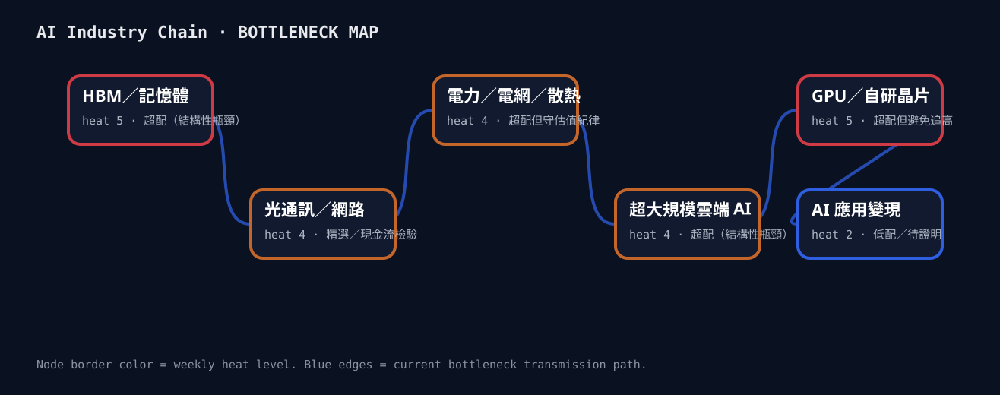
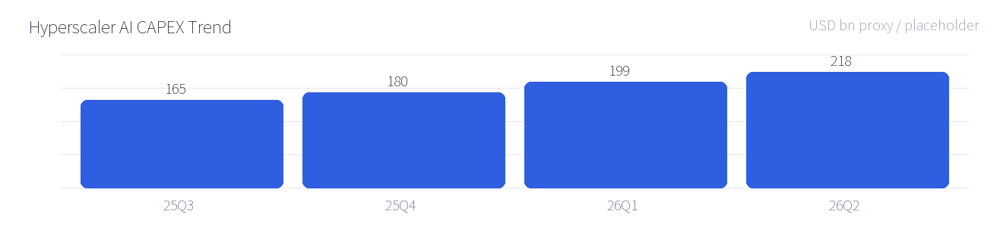

穩健
（示範資料）四大雲端業者本季資本支出年增仍落在 32%–38% 區間，與上期判斷一致，訂單能見度未見系統性惡化。
偏貴
（示範資料）GPU／自研晶片與 HBM 板塊本益比續處歷史高檔，市場對未來三年成長已計入相當樂觀假設。
中
（示範資料）泡沫風險集中在「AI 應用變現」故事型標的，基礎設施層（電力、記憶體）現金流證據仍相對紮實。
（示範資料）先進封裝（CoWoS）產能擴產進度落後原訂計畫，供給吃緊程度較上期更嚴重，訂價權持續向供應端傾斜。
（示範資料）多數 AI 應用故事仍缺乏經審計（audited）之變現數字，付費轉換率證據薄弱，為本期最需警戒板塊。
（示範資料）市場多將電力／電網瓶頸視為長期議題，但本期出現多起具體案例顯示電網並網延遲已實質推遲資料中心新建計畫，這是一個被低估的短期供給面風險，而非單純的長期敘事。
熱度＝市場擁擠度與定價完美度，不等於基本面好壞。
| 位置 | 板塊 | 熱度 | 溫度計 | 本週關鍵訊號 |
|---|---|---|---|---|
| 超配（結構性瓶頸） | HBM／記憶體 | 過熱 5 | 現貨與合約價同步走高，先進封裝產能仍是全鏈最緊瓶頸（示範資料） MU、SK 海力士（示範）、三星（示範） | |
| 精選／現金流檢驗 | 光通訊／網路 | 偏熱 4 | 800G 轉換動能短期放緩，但長期升級方向未變（示範資料） COHR、LITE（示範） | |
| 超配但守估值紀律 | 電力／電網／散熱 | 偏熱 4 | 電網並網延遲首次實質推遲資料中心新建計畫上線時程（示範資料） VRT、ETN（示範） | |
| 超配（結構性瓶頸） | 超大規模雲端 AI | 偏熱 4 | 四大雲端資本支出年增維持 32%–38% 區間，guidance 語氣未轉保守（示範資料） MSFT、GOOGL、AMZN、META（示範） | |
| 超配但避免追高 | GPU／自研晶片 | 過熱 5 | 估值已計入高度樂觀假設，訂單能見度仍佳但股價波動風險升高（示範資料） NVDA、AVGO（示範） | |
| 低配／待證明 | AI 應用變現 | 偏冷 2 | 付費轉換率與單位經濟模型仍缺乏經審計數字支持（示範資料） 多數 AI 應用層新創（示範，未列個股） |

本季四大雲端業者資本支出年增仍落在 32%–38% 區間，與上期判斷一致，未見系統性下修訊號。
THESIS 更新：維持原判斷：資本支出高速成長趨勢未變。本週新增證據顯示先進封裝（CoWoS）擴產進度落後原訂計畫，瓶頸程度較上期判斷更嚴重。
THESIS 更新：強化原判斷：HBM／先進封裝瓶頸論點獲得更多支持證據。部分下游客戶傳出訂單遞延訊號，長期升級方向未變，但短期動能較預期放緩。
THESIS 更新：論點方向未變，但短期強度下修，持續觀察下一季訂單能見度。本週出現多起具體案例顯示電網並網延遲已實質推遲數個資料中心新建計畫的上線時程，原判斷證據不足，予以推翻。
THESIS 更新：推翻原判斷：電力／電網已成為短期可觀測的實質瓶頸，非單純長期議題。本週尚無足夠新增財報數據可驗證此論點，維持待驗證狀態。
THESIS 更新：尚待下一輪財報周期提供更多證據。Thesis 只能因新事實或明確反證改變；單週股價波動只能影響估值狀態，不能直接改變基本面 thesis。
guidance 措辭是否轉趨保守，是驗證資本支出延續性 thesis 的關鍵訊號。
直接影響 HBM／記憶體板塊瓶頸強度判斷。
利率路徑影響高成長股折現率與估值容忍度。
每一條論點必須附證據等級。禁止只列自己相信的一邊。
四大雲端業者最新 guidance 皆維持或上修全年資本支出區間。
●●●先進封裝擴產進度落後，供給吃緊程度較上期強化。
●●○多起資料中心新建計畫延遲案例已浮現，帶動電網升級資本支出討論。
●○○板塊本益比續處歷史高檔，市場對未來三年成長已計入相當樂觀假設。
●●○多數 AI 應用層新創仍缺乏經審計之變現數字。
●●○本週出現多起具體案例顯示電網並網延遲已推遲資料中心新建計畫。
●●●| 板塊 | 基本面是否支持估值 | 風險報酬 | 結論 |
|---|---|---|---|
| HBM／記憶體 | 基本面（供給吃緊、訂價權）支持目前估值，但已反映多數已知利多。 | 中性偏正：下檔有現金流支撐，上檔需新增供給缺口證據。 | 可持有 |
| 光通訊／網路 | 基本面部分支持，短期訂單動能轉弱削弱估值論證強度。 | 風險報酬轉差：短期動能疑慮尚未反映在股價中。 | 不加碼 |
| 電力／電網／散熱 | 基本面轉強（瓶頸證據增加），但估值尚未完全反映瓶頸溢價。 | 風險報酬偏正：基本面上修速度快於估值調整速度。 | 可持有 |
| 超大規模雲端 AI | 基本面穩健支持，guidance 未見系統性下修。 | 中性：估值與基本面大致同步，無明顯錯價。 | 可持有 |
| GPU／自研晶片 | 基本面仍佳，但估值已計入高度樂觀假設，基本面對估值的邊際支持力道減弱。 | 風險報酬轉差：任何不如預期的 guidance 都可能觸發估值重定價。 | 警戒 |
| AI 應用變現 | 基本面證據薄弱，缺乏經審計變現數字支持目前市場敘事。 | 風險報酬最差：估值隱含的樂觀假設遠超過可驗證證據。 | 警戒 |
（示範資料）四大雲端業者本季資本支出年增維持 32%–38% 區間，現金流量對資本支出比率（CAPEX／OCF）仍處可負擔範圍，尚未觀察到以舉債方式支撐擴張規模的系統性訊號；guidance 措辭延續穩健，未見保守化轉向。

（示範資料）AI 應用層變現證據仍是全鏈最弱一環：多數廠商僅揭露使用者數或互動量等虛榮指標（vanity metrics），缺乏經審計（audited）的付費轉換率與單位毛利數字，本期維持「未證明」判定。
縱軸：長期信念。橫軸：當前價格吸引力。標的進出象限必須留下紀錄。
（示範資料）AI 資本支出擴張趨勢延續，供應鏈上游（HBM、先進封裝、電力基建）的瓶頸強度本期持續強化，是目前全鏈中基本面證據最紮實的一環。
（示範資料）GPU／自研晶片板塊的估值是否已提前反映未來三年的樂觀成長路徑，任何 guidance 不如預期都可能觸發顯著重定價。
（示範資料）市場可能低估電力／電網瓶頸從「長期敘事」轉為「短期可觀測風險」的速度，這對資料中心上線時程與相關營收認列時間可能有實質影響。
（示範資料）如果本期判斷有誤，最可能的錯誤在於高估電力瓶頸的短期衝擊程度——若電網延遲問題透過既有備援產能快速緩解，相關基建溢價的論點將站不住腳。
本報告為可分享之投資研究筆記，僅供資訊與教育用途，不構成任何證券之買賣建議或投資邀約。文中提及之公司與代號僅為研究框架示例。所有判斷可能出錯；讀者應自行進行盡職調查並為自身決策負責。過往表現不代表未來結果。